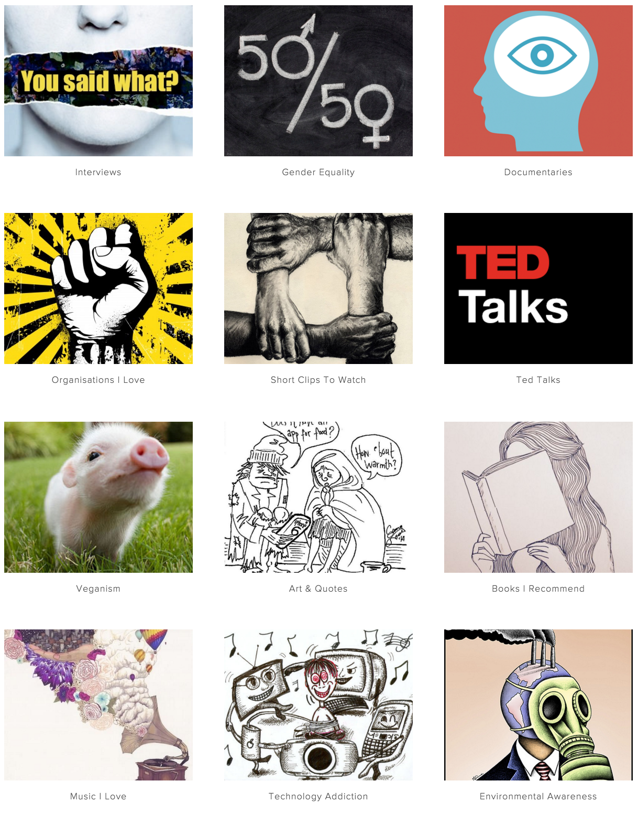

“As readers we push at arguments, testing the expressed and articulating the submerged assumptions of fact, definition, or value in order to accept or reject them. That is what it means to be sensitive to language in argument: to be aware of facts that are assumed significant, to notice definitions that might be slippery or inadequate, to pick out values that might be implicit in word choice and metaphor.”
Jeanne Fahnstock, Marie Secor
When we visit the site, everything is very clean, modern, and minimalistic. The site's choice of a hand-drawn aesthetic (seen in the site's banner) coupled with the writing's informal voice (which includes her disregard for grammatical or syntactic integrity) is actually somewhat refreshing. It's unpolished, unedited, and clearly straight from the drawing board. There's no hiding here; it's all coming from a 19-year-old girl sitting behind a keyboard and pouring out her thoughts. The site's presentation has resonated well with the youthful, casual internet culture it aims to move.
To address the effectiveness of her rhetoric, we must first determine what Essena is actually trying to do and whom she is trying to address. At first pass, especially following the outbreak of her video, one might think that Essena's ultimate purpose is to condemn social media; and I wouldn't fault anyone for that conclusion. But let's look deeper at what Essena has to say:
My Aim: A friend of mine made this very simple for me at a time I felt a little lost and overwhelmed. It really helped me breathe and realise my life aim isn't at all that big or scary, it's simply this:
- Being truly honestly happy and content in the present.
- Having a positive impact on other people and the world.
That's it. That's my aim. I don't wish anything more from myself other than to action my values, keep learning, keep being creative and enjoying this crazy ass experience we call life.
As you can see, Essena's claim extends the scope beyond social media itself. Though her brief stint of internet fame was born of her dramatic social media exit, Essena's prose offers insight into a lifestyle that doesn't stop at cutting digital distratctions. Let's Be Game Changers focuses on several things: "veganism, creative imagery with purpose, poems, writing, interviews with people that inspire me, and of course the finical reality behind deluding people off Instagram” [sic]. So, in addition to a personal blog offering insight into Essena's case in particular, the site offers a collection of various bits of media that she has deemed creative or inspiring:

We can then examine everything else the site has to offer. Her main collection of media is grouped into several categories (above). There is a section of the site that specifically addressed Essena's struggle with Instagram and social media, in which she has laid bare all that goes into the fake "reality" of social media.
There's a lot going on here, and a lot of it seems to be far-reaching and unspecific. It's difficult to decipher exactly what Essena is addressing in particular. It's conglomeration of differnt topics and ideas, and none of them are specific to any one audience's problems or experiences. Essena even acknowledges that she doesn't "have all the answers", nor does she intend for the site to be a catch-all solution to the problems she's identified with social media culture. She says:
"I want to live in a world that encourages creative ideas, innovation and authentic self expression. This site is a base for my own self expression (writing) and how I wish to share relevant core messages that enriched my life. I don't have all the answers and I don't want them. I want to feel, question and create."
We've addressed what the site is, what it says, and what it aims to do. Essena. Thus far, it seems that Essena's claims are far and wide, and yet still the question remains: is it genuine? Does it address a real, tangible issue? Does it effectively persuade its intended audience? To figure it out, let's turn to a bit of rhetorical history.